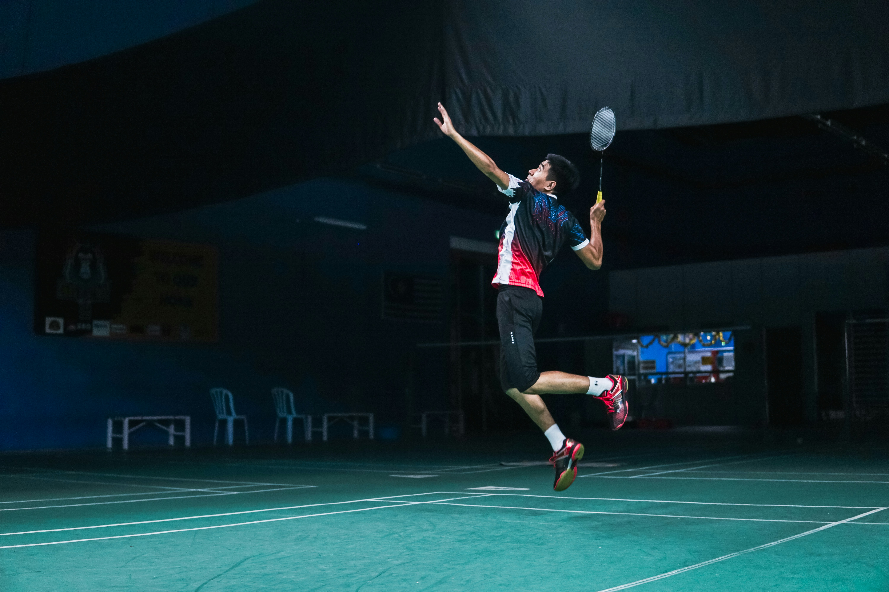

HOBI DAN MINAT



Tujuan besar saya adalah menjadi guru Profesional, Vidioner dan berpusat pada muriddengan menciptakan pembelajaran yang inklusif, adaptif, serta memadukan teknologi dan nilai budi pekerti agar peserta didik menjadi pribadi yang cerdas dan berkarakter.
Padlan Holik, S.Pd
Universitas Negeri Yogyakarta
Lebak, Prov Banten
Visioner, Humanis, Inovatif
seorang mahasiswa Pendidikan Profesi Guru (PPG) Prajabatan Universitas Negeri Yogyakarta Gelombang 1 Tahun 2026. Saya lahir, tumbuh, dan berproses di Lebak Banten, sebuah kota yang dijuluki masih memegang adat leluhur yang kuat.
Inspirasi: saya memilih jalan sebagai pendidik terinspirasi dari guru guru pas saya masih sekolah, di mana setiap tempat adalah sekolah dan dan di dalamnya ada guru begitu pula dengan orang-orang sekeliling saya yakni seorang guru. Menyaksikan bagaimana pendidikan mampu mengangkat martabat hidup seseorang memicu panggilan jiwa saya untuk ikut ambil bagian di dalamnya. Saya sadar bahwa guru bukan sekadar profesi untuk mentransfer ilmu, melainkan arsitek peradaban yang bertugas menuntun kodrat anak.
Warisan budaya dan kearifan lokal Kabupaten Lebak, Banten, yang membentuk karakter masyarakatnya.
Urang Kanekes hidup tanpa listrik, kendaraan, dan teknologi modern. Mereka menjaga tradisi leluhur secara mutlak sebagai bentuk keteguhan identitas.
#PenjagaTradisiBukan sekadar wisata, Saba Budaya adalah silaturahmi sakral yang menghormati kesucian adat Baduy. Pengunjung belajar tanpa merusak tatanan.
#SilaturahmiAdatAturan adat mewajibkan masyarakat menjaga hutan, sungai, dan lingkungan. Filosofi hidup yang menjamin kelestarian alam untuk generasi mendatang.
#HarmoniAlam"Olahraga bukan sekadar melatih ketangkasan otot dan raga, melainkan media terbaik untuk mentransfer nilai sportivitas, disiplin tangguh, serta membentuk karakter anak bangsa."
Fokus mendalam pada penerapan Kurikulum Merdeka, perancangan asesmen motorik berbasis digital, serta pemanfaatan sport pedagogy technology di sekolah mitra.
Mempelajari dasar anatomi manusia, kinesiologi gerak, fisiologi latihan, serta metodologi pengembangan modul ajar olahraga yang inklusif.
Membangun landasan berpikir saintifik dan analitis yang menjadi bekal penting dalam memahami ilmu faal olahraga, sekaligus menanamkan kedisiplinan sebagai fondasi karakter.
Mampu merancang instrumen dan program latihan fisik yang terukur sesuai dengan tingkat pertumbuhan usia peserta didik.
Menguasai pemanfaatan aplikasi analisis gerak, media pembelajaran interaktif, serta e-LKPD untuk menunjang literasi fisik siswa.
Berpengalaman memimpin manajemen pertandingan, pengorganisasian class meeting, serta pembentukan kompetisi yang sportif.
